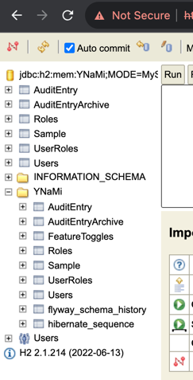
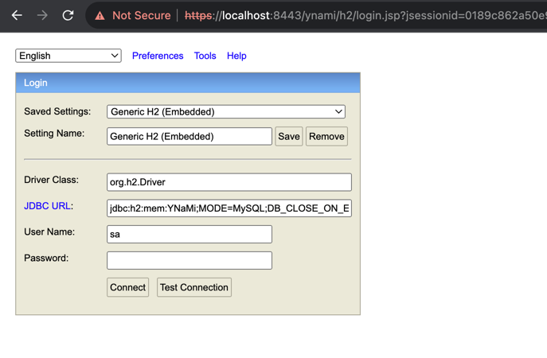
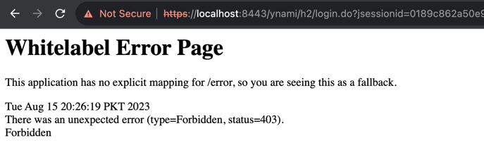
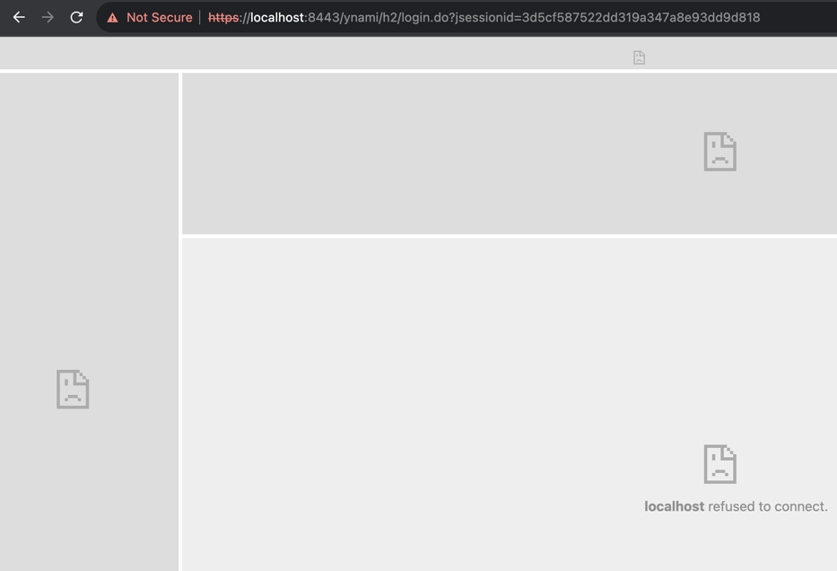

Upgrade to SpringBoot 3.1.2 from 2.0.5-Release
Issues faced during the upgrade
Right after changing the spring-boot-starter-parent version from 2.0.5.RELEASE to 3.1.2 in
the pom.xml file, we're going to face a lot of cannot find symbol and cannot find import kind of
errors along-with many others.
Following are the details of the issues encountered during the upgrade process
Click to see details of `Non-resolvable import POM - Selenium`
Fatal error compiling: java.lang.ExceptionInInitializerError
pom.xml file started showing errors such as Non-resolvable import POM after the upgrade.
Click here for stacktrace
[ERROR] [ERROR] Some problems were encountered while processing the POMs: [ERROR] Non-resolvable import POM: The following artifacts could not be resolved: org.seleniumhq.selenium:selenium-bom:pom:3.14.0 (absent): org.seleniumhq.selenium:selenium-bom:pom:3.14.0 was not found in https://repo.maven.apache.org/maven2 during a previous attempt. This failure was cached in the local repository and resolution is not reattempted until the update interval of central has elapsed or updates are forced @ org.springframework.boot:spring-boot-dependencies:3.1.2, ~/.m2/repository/org/springframework/boot/spring-boot-dependencies/3.1.2/spring-boot-dependencies-3.1.2.pom, line 2275, column 19
Fix
Fix for this problem in my setup/environment was just to update the latest 4.11.0 version for the
org.seleniumhq.selenium maven dependencies in the pom.xml file.
Click to see details of `Unresolved dependency`
Unresolved dependency
pom.xml file started showing errors such as Unresolved dependency.
Click here for errors
'dependencies.dependency.version' for mysql:mysql-connector-java:jar is missing. 'dependencies.dependency.version' for joda-time:joda-time:jar is missing. Unresolved dependency: 'mysql:mysql-connector-java:jar:unknown' Unresolved dependency: 'joda-time:joda-time:jar:unknown'
Fix
Fix for this problem in my setup/environment was to add the latest 2.12.5 version for the
joda-time maven dependency, and to change the mysql-connector-java dependency to mysql-connector-j
with the latest 8.1.0 version in the pom.xml file.
Click to see details of `Plugin not found`
Unresolved dependency
pom.xml file started showing errors such as Plugin not found.
Click here for errors
Plugin 'maven-surefire-plugin:2.22.0' not found Plugin 'org.apache.maven.plugins:maven-project-info-reports-plugin:3.0.0' not found Plugin 'org.apache.maven.plugins:maven-jxr-plugin:2.5' not found Plugin 'org.apache.maven.plugins:maven-checkstyle-plugin:3.0.0' not found Plugin 'org.apache.maven.plugins:maven-surefire-report-plugin:2.22.0' not found
Fix
Fix for this problem in my setup/environment was just to add the latest versions for the above-mentioned maven plugins in the pom.xml file.
Click to see details of `package does not exist`
Unresolved dependency
mvn clean compile started failing with errors such as package does not exist.
Click here for errors
java: package javax.persistence does not exist java: package javax.servlet.http does not exist java: package javax.validation.constraints does not exist java: cannot find symbol symbol: class HttpServletResponse java: cannot find symbol symbol: class Entity java: cannot find symbol symbol: class Column etc.
Fix
Fix for this problem in my setup/environment was to add the latest jakarta.validation-api dependency
in the pom.xml file and migrating the javax imports to jakarta imports.
Click to see details of `BeanCreationException`
Unresolved dependency
mvn clean compile started failing with errors such as Error creating bean with name 'flyway'.
Click here for errors
org.springframework.beans.factory.BeanCreationException: Error creating bean with name 'flyway' defined in class path resource [org/springframework/boot/autoconfigure/flyway/FlywayAutoConfiguration$FlywayConfiguration.class]: Unexpected exception during bean creation at org.springframework.beans.factory.support.AbstractAutowireCapableBeanFactory.createBean(AbstractAutowireCapableBeanFactory.java:533) at org.springframework.beans.factory.support.AbstractBeanFactory.lambda$doGetBean$0(AbstractBeanFactory.java:326) at org.springframework.beans.factory.support.DefaultSingletonBeanRegistry.getSingleton(DefaultSingletonBeanRegistry.java:234) at org.springframework.beans.factory.support.AbstractBeanFactory.doGetBean(AbstractBeanFactory.java:324) at org.springframework.boot.devtools.restart.RestartLauncher.run(RestartLauncher.java:50) Caused by: java.lang.TypeNotPresentException: Type org.flywaydb.core.api.migration.JavaMigration not present at java.base/sun.reflect.generics.factory.CoreReflectionFactory.makeNamedType(CoreReflectionFactory.java:117) at java.base/sun.reflect.generics.visitor.Reifier.visitClassTypeSignature(Reifier.java:125) at java.base/sun.reflect.generics.tree.ClassTypeSignature.accept(ClassTypeSignature.java:49) at java.base/sun.reflect.generics.visitor.Reifier.reifyTypeArguments(Reifier.java:68) at java.base/sun.reflect.generics.visitor.Reifier.visitClassTypeSignature(Reifier.java:138) ... 19 common frames omitted Caused by: java.lang.ClassNotFoundException: org.flywaydb.core.api.migration.JavaMigration at java.base/jdk.internal.loader.BuiltinClassLoader.loadClass(BuiltinClassLoader.java:641) at java.base/jdk.internal.loader.ClassLoaders$AppClassLoader.loadClass(ClassLoaders.java:188) at java.base/java.lang.ClassLoader.loadClass(ClassLoader.java:521) at java.base/java.lang.Class.forName0(Native Method) at java.base/java.lang.Class.forName(Class.java:496) at java.base/java.lang.Class.forName(Class.java:475) at java.base/sun.reflect.generics.factory.CoreReflectionFactory.makeNamedType(CoreReflectionFactory.java:114)
Fix
Fix for this problem in my setup/environment was just to update the latest 9.21.0 version for the
flyway-core maven dependencies in the pom.xml file.
Also, have to change the way in which Flyway is instantiated, from something like this:
final Flyway flyway = new Flyway();
flyway.setDataSource(((JdbcTemplate) executor.getTemplate()).getDataSource());
to this:
final Flyway flyway = configure()
.dataSource(((JdbcTemplate) executor.getTemplate()).getDataSource())
.load();
Click to see details of `ClassNotFoundException: MySQL5Dialect`
Unresolved dependency
mvn clean compile started failing with errors such
as Could not load requested class : org.hibernate.dialect.MySQL5Dialect.
Click here for errors
org.springframework.beans.factory.BeanCreationException: Error creating bean with name 'entityManagerFactory' defined in class path resource [org/springframework/boot/autoconfigure/orm/jpa/HibernateJpaConfiguration.class]: Unable to create requested service [org.hibernate.engine.jdbc.env.spi.JdbcEnvironment] due to: Unable to resolve name [org.hibernate.dialect.MySQL5Dialect] as strategy [org.hibernate.dialect.Dialect] at org.springframework.beans.factory.support.AbstractAutowireCapableBeanFactory.initializeBean(AbstractAutowireCapableBeanFactory.java:1770) at org.springframework.beans.factory.support.AbstractAutowireCapableBeanFactory.doCreateBean(AbstractAutowireCapableBeanFactory.java:598) at org.springframework.beans.factory.support.AbstractAutowireCapableBeanFactory.createBean(AbstractAutowireCapableBeanFactory.java:520) at org.springframework.beans.factory.support.AbstractBeanFactory.lambda$doGetBean$0(AbstractBeanFactory.java:326) at java.base/java.lang.reflect.Method.invoke(Method.java:578) at org.springframework.boot.devtools.restart.RestartLauncher.run(RestartLauncher.java:50) Caused by: org.hibernate.service.spi.ServiceException: Unable to create requested service [org.hibernate.engine.jdbc.env.spi.JdbcEnvironment] due to: Unable to resolve name [org.hibernate.dialect.MySQL5Dialect] as strategy [org.hibernate.dialect.Dialect] at org.hibernate.service.internal.AbstractServiceRegistryImpl.createService(AbstractServiceRegistryImpl.java:277) at org.hibernate.service.internal.AbstractServiceRegistryImpl.initializeService(AbstractServiceRegistryImpl.java:239) ... 19 common frames omitted Caused by: org.hibernate.boot.registry.selector.spi.StrategySelectionException: Unable to resolve name [org.hibernate.dialect.MySQL5Dialect] as strategy [org.hibernate.dialect.Dialect] at org.hibernate.boot.registry.selector.internal.StrategySelectorImpl.selectStrategyImplementor(StrategySelectorImpl.java:154) at org.hibernate.boot.registry.selector.internal.StrategySelectorImpl.resolveStrategy(StrategySelectorImpl.java:236) at org.hibernate.boot.registry.selector.internal.StrategySelectorImpl.resolveStrategy(StrategySelectorImpl.java:189) at org.hibernate.engine.jdbc.dialect.internal.DialectFactoryImpl.constructDialect(DialectFactoryImpl.java:123) ... 34 common frames omitted Caused by: org.hibernate.boot.registry.classloading.spi.ClassLoadingException: Unable to load class [org.hibernate.dialect.MySQL5Dialect] at org.hibernate.boot.registry.classloading.internal.ClassLoaderServiceImpl.classForName(ClassLoaderServiceImpl.java:123) at org.hibernate.boot.registry.selector.internal.StrategySelectorImpl.selectStrategyImplementor(StrategySelectorImpl.java:150) ... 42 common frames omitted Caused by: java.lang.ClassNotFoundException: Could not load requested class : org.hibernate.dialect.MySQL5Dialect at org.hibernate.boot.registry.classloading.internal.AggregatedClassLoader.findClass(AggregatedClassLoader.java:215) at java.base/java.lang.ClassLoader.loadClass(ClassLoader.java:588) at java.base/java.lang.ClassLoader.loadClass(ClassLoader.java:521) at java.base/java.lang.Class.forName0(Native Method)
Fix
Fix for this problem in my setup/environment was use the follow ing property in the
application.properties file,
i.e. just use org.hibernate.dialect.MySQLDialect instead of the missing org.hibernate.dialect.MySQL5Dialect
or the org.hibernate.dialect.MySQL57Dialect and org.hibernate.dialect.MySQL8Dialect, the deprecated ones:
spring.jpa.properties.hibernate.dialect = org.hibernate.dialect.MySQLDialect
New Fix
Although the above-mentioned fix is working but SpringBoot is logging a warning as below:
WARN 27688 --- [ restartedMain] org.hibernate.orm.deprecation : HHH90000025: MySQLDialect does not need to
be specified explicitly using 'hibernate.dialect' (remove the property setting and it will be selected by default)
[restartedMain] WARN org.hibernate.orm.deprecation.constructDialect - HHH90000025: MySQLDialect does not need to be
specified explicitly using 'hibernate.dialect' (remove the property setting and it will be selected by default)
While prior to Hibernate 6, it was common to provide the Dialect version via the hibernate.dialect setting, this is no longer the recommended strategy.
Because Hibernate 6 has greatly simplified the Dialect handlers, it’s best to let Hibernate figure out what Dialect instance to use based on the underlying database server and client capabilities.
So, removing the hibernate.dialect from properties files.
Click to see details of `cannot find symbol WebSecurityConfigurerAdapter`
Unresolved dependency
mvn clean compile started failing with errors such as cannot find symbol: WebSecurityConfigurerAdapter.
Click here for errors
java: cannot find symbol symbol: class WebSecurityConfigurerAdapter location: package org.springframework.security.config.annotation.web.configuration
Fix
Fix for this problem in my setup/environment was to …. WIP
Click to see details of `BeanCreationException: entityManagerFactory`
Unresolved dependency
mvn clean compile started failing with errors such as Error creating bean with name 'entityManagerFactory'.
Click here for errors
org.springframework.beans.factory.BeanCreationException: Error creating bean with name 'entityManagerFactory' defined in class path resource [org/springframework/boot/autoconfigure/orm/jpa/HibernateJpaConfiguration.class]: net/bytebuddy/NamingStrategy$SuffixingRandom$BaseNameResolver at org.springframework.beans.factory.support.AbstractAutowireCapableBeanFactory.initializeBean(AbstractAutowireCapableBeanFactory.java:1770) at org.springframework.beans.factory.support.AbstractAutowireCapableBeanFactory.doCreateBean(AbstractAutowireCapableBeanFactory.java:598) at org.springframework.beans.factory.support.AbstractAutowireCapableBeanFactory.createBean(AbstractAutowireCapableBeanFactory.java:520) at org.springframework.boot.devtools.restart.RestartLauncher.run(RestartLauncher.java:50) Caused by: java.lang.NoClassDefFoundError: net/bytebuddy/NamingStrategy$SuffixingRandom$BaseNameResolver at org.hibernate.bytecode.internal.BytecodeProviderInitiator.buildBytecodeProvider(BytecodeProviderInitiator.java:59) at org.hibernate.bytecode.internal.BytecodeProviderInitiator.buildDefaultBytecodeProvider(BytecodeProviderInitiator.java:46) ... 19 common frames omitted Caused by: java.lang.ClassNotFoundException: net.bytebuddy.NamingStrategy$SuffixingRandom$BaseNameResolver at java.base/jdk.internal.loader.BuiltinClassLoader.loadClass(BuiltinClassLoader.java:641) at java.base/jdk.internal.loader.ClassLoaders$AppClassLoader.loadClass(ClassLoaders.java:188) at java.base/java.lang.ClassLoader.loadClass(ClassLoader.java:521)
Fix
net.bytebuddy:byte-buddy maven dependency was added for the test scope in the pom.xml file as part of
the Java 20 upgrade, but that's causing problem after Springboot's upgrade, so solution is just to remove it from the
pom.xml as it'll be loaded by few other dependencies.
Click to see details of `cannot access WrapsElement`
Unresolved dependency
mvn clean compile started failing with errors such as cannot access org.openqa.selenium.internal.WrapsElement.
Click here for errors
java: cannot access org.openqa.selenium.internal.WrapsElement class file for org.openqa.selenium.internal.WrapsElement not found
Fix
Fix for this problem in my setup/environment was just to add the selenium-common maven dependencies with
latest 2.0b1 version in the pom.xml file.
<dependency>
<groupId>org.seleniumhq.selenium</groupId>
<artifactId>selenium-common</artifactId>
<version>2.0b1</version>
</dependency>
Click to see details of `Schema-validation: missing table`
Unresolved dependency
mvn clean spring-boot:run started failing with errors such as Schema-validation: missing table.
It happens when the spring.jpa.hibernate.ddl-auto property is set to validate in the
application.properties files.
Click here for errors
Caused by: org.hibernate.tool.schema.spi.SchemaManagementException: Schema-validation: missing table [AuditEntry] at org.hibernate.tool.schema.internal.AbstractSchemaValidator.validateTable(AbstractSchemaValidator.java:134) at org.hibernate.tool.schema.internal.GroupedSchemaValidatorImpl.validateTables(GroupedSchemaValidatorImpl.java:46)But on the other hand, the
spring.jpa.hibernate.ddl-autoproperty is set toupdate, then firstly, the tables are created by theflywaymigrations within the correct schema during the server startup, and then JPA/hibernate also creates the tables from the hibernate entities, but outside of the expected schema as shown below:
So, in order to stop hibernate from creating tables/generating DDL commands, setting the following properties in the application.properties file.
spring.jpa.hibernate.ddl-auto=validate spring.jpa.properties.jakarta.persistence.schema-generation.scripts.action=none
Fix
Fix for this problem in my setup/environment was just to add the selenium-common maven dependencies with
latest 2.0b1 version in the pom.xml file.
<dependency>
<groupId>org.seleniumhq.selenium</groupId>
<artifactId>selenium-common</artifactId>
<version>2.0b1</version>
</dependency>
Click to see details of `UnsatisfiedDependencyException: no implementation could be found`
Unresolved dependency
After all these different dependencies upgrades, mvn clean spring-boot:run started failing with errors such as
UnsatisfiedDependencyException: no implementation could be found after enabling Togglz, i.e. setting
the config.togglz.enabled property to true in the
application.properties file.
Click here for errors
17-08-2023 20:44:30.180 [restartedMain] ERROR org.springframework.boot.web.embedded.tomcat.TomcatStarter.onStartup - Error starting Tomcat context. Exception: org.springframework.beans.factory.UnsatisfiedDependencyException. Message: Error creating bean with name 'org.togglz.spring.boot.actuate.autoconfigure.TogglzAutoConfiguration$TogglzConsoleConfiguration': Unsatisfied dependency expressed through constructor parameter 0: Error creating bean with name 'togglz-org.togglz.spring.boot.actuate.autoconfigure.TogglzProperties': Could not bind properties to 'TogglzProperties' : prefix=togglz, ignoreInvalidFields=false, ignoreUnknownFields=true *************************** APPLICATION FAILED TO START *************************** Description: The Bean Validation API is on the classpath but no implementation could be found Action: Add an implementation, such as Hibernate Validator, to the classpath
Fix
As the Bean Validation API (i.e. jakarta.validation-api) dependency is available on the classpath,
so there should be corresponding implementation for this jakarta.validation-api, otherwise, we'll end up with error
like shown above.
So the fix for this problem in my setup/environment was just to add the hibernate-validator maven dependencies with
latest 8.0.1.Final version in the pom.xml file.
<dependency>
<groupId>org.hibernate.validator</groupId>
<artifactId>hibernate-validator</artifactId>
<version>${hibernate-validator.version}</version>
</dependency>
Click to see details of `BeanCreationException, BeanInstantiationException`
Unresolved dependency
mvn clean spring-boot:run started failing with errors such
as BeanCreationException: Failed to instantiate [jakarta.servlet.Filter].
After all these different dependencies upgrades, mvn clean spring-boot:run started failing with errors such as
BeanCreationException: Failed to instantiate [jakarta.servlet.Filter] after enabling Togglz, i.e. setting
the config.togglz.enabled property to true in the
application.properties file.
Click here for errors
17-08-2023 21:19:05.751 [restartedMain] ERROR org.springframework.boot.SpringApplication.reportFailure - Application run failed org.springframework.beans.factory.BeanCreationException: Error creating bean with name 'springSecurityFilterChain' defined in class path resource [org/springframework/security/config/annotation/web/configuration/WebSecurityConfiguration.class]: Failed to instantiate [jakarta.servlet.Filter]: Factory method 'springSecurityFilterChain' threw exception with message: This method cannot decide whether these patterns are Spring MVC patterns or not. If this endpoint is a Spring MVC endpoint, please use requestMatchers(MvcRequestMatcher); otherwise, please use requestMatchers(AntPathRequestMatcher). at org.springframework.beans.factory.support.ConstructorResolver.instantiate(ConstructorResolver.java:659) at org.springframework.beans.factory.support.ConstructorResolver.instantiateUsingFactoryMethod(ConstructorResolver.java:493) at org.springframework.boot.devtools.restart.RestartLauncher.run(RestartLauncher.java:50) Caused by: org.springframework.beans.BeanInstantiationException: Failed to instantiate [jakarta.servlet.Filter]: Factory method 'springSecurityFilterChain' threw exception with message: This method cannot decide whether these patterns are Spring MVC patterns or not. If this endpoint is a Spring MVC endpoint, please use requestMatchers(MvcRequestMatcher); otherwise, please use requestMatchers(AntPathRequestMatcher). at org.springframework.beans.factory.support.SimpleInstantiationStrategy.instantiate(SimpleInstantiationStrategy.java:171) at org.springframework.beans.factory.support.ConstructorResolver.instantiate(ConstructorResolver.java:655) ... 24 common frames omitted Caused by: java.lang.IllegalArgumentException: This method cannot decide whether these patterns are Spring MVC patterns or not. If this endpoint is a Spring MVC endpoint, please use requestMatchers(MvcRequestMatcher); otherwise, please use requestMatchers(AntPathRequestMatcher). at org.springframework.util.Assert.isTrue(Assert.java:122) at org.springframework.security.config.annotation.web.AbstractRequestMatcherRegistry.requestMatchers(AbstractRequestMatcherRegistry.java:204) at org.springframework.security.config.annotation.web.AbstractRequestMatcherRegistry.requestMatchers(AbstractRequestMatcherRegistry.java:248) at pk.lucidxpo.ynami.spring.security.SecurityConfig.lambda$webSecurityCustomizer$0(SecurityConfig.java:98)
Fix
Fix for this problem in my setup/environment was to update the SecurityConfig according to Spring boot 3 style.
Click to see details of `Unsupported Database: MySQL`
Unresolved dependency
mvn clean spring-boot:run started failing with errors such as Unsupported Database: MySQL after upgrading flyway
to the latest 9.21.0 version and if the mysql spring profile is activated instead of h2.
Click here for errors
ERROR org.springframework.boot.SpringApplication.reportFailure - Application run failed org.springframework.beans.factory.BeanCreationException: Error creating bean with name 'flyway' defined in class path resource [org/springframework/boot/autoconfigure/flyway/FlywayAutoConfiguration$FlywayConfiguration.class]: Failed to instantiate [org.flywaydb.core.Flyway]: Factory method 'flyway' threw exception with message: Unsupported Database: MySQL 8.1 at org.springframework.beans.factory.support.ConstructorResolver.instantiate(ConstructorResolver.java:659) at org.springframework.beans.factory.support.ConstructorResolver.instantiateUsingFactoryMethod(ConstructorResolver.java:647) at org.springframework.boot.devtools.restart.RestartLauncher.run(RestartLauncher.java:50) Caused by: org.springframework.beans.BeanInstantiationException: Failed to instantiate [org.flywaydb.core.Flyway]: Factory method 'flyway' threw exception with message: Unsupported Database: MySQL 8.1 at org.springframework.beans.factory.support.SimpleInstantiationStrategy.instantiate(SimpleInstantiationStrategy.java:171) at org.springframework.beans.factory.support.ConstructorResolver.instantiate(ConstructorResolver.java:655) ... 24 common frames omitted Caused by: org.flywaydb.core.api.FlywayException: Unsupported Database: MySQL 8.1 at org.flywaydb.core.internal.database.DatabaseTypeRegister.getDatabaseTypeForConnection(DatabaseTypeRegister.java:105) at org.flywaydb.core.api.configuration.ClassicConfiguration.setDataSource(ClassicConfiguration.java:1079) at org.flywaydb.core.api.configuration.FluentConfiguration.dataSource(FluentConfiguration.java:614)
Fix
Fix for this problem in my setup/environment was just to add the flyway-mysql maven dependencies with
latest 9.21.0 version in the pom.xml file.
<dependency>
<groupId>org.flywaydb</groupId>
<artifactId>flyway-mysql</artifactId>
<version>${flyway.version}</version>
</dependency>
Click to see details of `Inaccessible H2 Console`
Unresolved dependency
After the upgrade, wasn't able to access the h2-console, even though everything was properly setup for h2 in the
application-h2.properties file and h2 was present in the list of
spring.profiles.active in the application.properties file.
h2 settings configured in my application are:
# H2
spring.h2.console.enabled=true
spring.h2.console.path=/h2
# Datasource
spring.datasource.url=jdbc:h2:mem:${spring.datasource.name};MODE=MySQL;DB_CLOSE_ON_EXIT=FALSE;DB_CLOSE_DELAY=-1;DATABASE_TO_UPPER=false;
spring.datasource.username=sa
spring.datasource.password=
spring.datasource.driver-class-name=org.h2.Driver
Click here for details
h2is supposed to be accessible athttps://localhost:8443/ynami/h2in my setup. After hitting this URL, I was getting:
But clicking on
connectwas giving meWhitelabel Error Pagewith(type=Forbidden, status=403)
Fix
So, Spring Security playing its role and that means that h2 console should be allowed through Spring Security,
and that's how we can fix it:
package pk.lucidxpo.ynami.spring.security;
import org.springframework.beans.factory.annotation.Value;
import org.springframework.context.annotation.Bean;
import org.springframework.context.annotation.Configuration;
import org.springframework.context.annotation.Profile;
import org.springframework.security.config.annotation.web.builders.HttpSecurity;
import org.springframework.security.config.annotation.web.configuration.EnableWebSecurity;
import org.springframework.security.config.annotation.web.configurers.HeadersConfigurer.FrameOptionsConfig;
import org.springframework.security.web.SecurityFilterChain;
import static org.springframework.security.web.util.matcher.AntPathRequestMatcher.antMatcher;
@Profile("h2")
@Configuration
@EnableWebSecurity
public class H2ConsoleSecurityConfig {
final String h2ConsolePattern;
public H2ConsoleSecurityConfig(@Value("${spring.h2.console.path:/h2-console}") String h2ConsolePath) {
this.h2ConsolePattern = h2ConsolePath + "/**";
}
@Bean
public SecurityFilterChain h2ConsoleSecurityFilterChain(final HttpSecurity http) throws Exception {
http
.authorizeHttpRequests(auth -> auth.requestMatchers(antMatcher(h2ConsolePattern)).permitAll())
.csrf(csrf -> csrf.ignoringRequestMatchers(antMatcher(h2ConsolePattern)))
.headers(headers -> headers.frameOptions(FrameOptionsConfig::disable))
;
return http.build();
}
}
The following statement will ensure that you don't see empty frames like below after logging in to h2 console:
headers(headers -> headers.frameOptions(HeadersConfigurer.FrameOptionsConfig::disable))

Improved version of that piece of code is:
http
.securityMatcher(h2ConsolePattern)
.authorizeHttpRequests(auth -> auth.requestMatchers(antMatcher(h2ConsolePattern)).permitAll())
.headers(headers -> headers.frameOptions(HeadersConfigurer.FrameOptionsConfig::sameOrigin))
;
FrameOptionsConfig
- DENY - is a default value. With this the page cannot be displayed in a frame, regardless of the site attempting to do so.
- SAMEORIGIN - We can use this as the page will be (and can be) displayed in a frame on the same server/origin as the page itself.
- ALLOW-FROM - Allows you to specify an origin, where the page can be displayed in a frame.